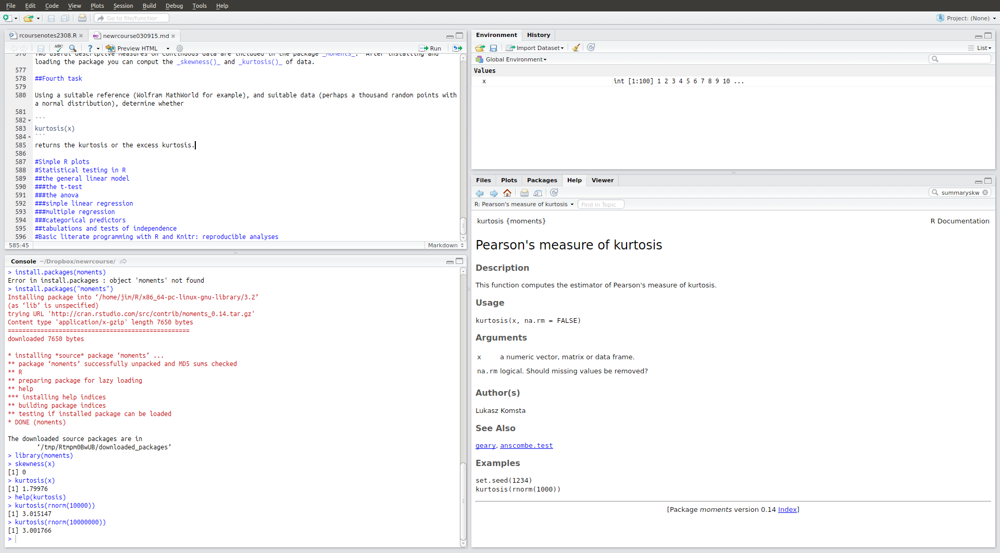

When you open RStudio, you will see three or four frames or panes. The script pane is only visible if you are editing a script.

The main frame on the lower left shows you the R command line interpreter or console. this is where you will issue commands and see the results. The pane on the top left is the document viewer were you can view and edit R scripts and data files.
On the top right you see your workspace and on a second tab the history. The workspace contains your data objects and the history shows a list of commands issued in your session.
Below this is the file and graph browser. You can browse files that might contain R code or data and you can browse graphs and charts that you produce in R. You can also access the help system from this window.